My name is Clint Deric Flores Dalayoan, 18 years of age. I was born on February 8, 1998. I live at 44 Purok Kudirao Loakan Proper Baguio City taking up Bachelor of Science and Information Technology at Saint Louis University. I am currently studying and developing my skills and talents. I love programming, taking pictures, web developing, playing basketball and many more. I am an athletic and humorous person, I usually always take time reading and watching the news about technology. When I was a kid and my brother taught me how to use a computer, I fell in love with it. I research things about how to modify the computers software and many more and applied to it in real life. After that when, I learned how to use smartphones, I also modify smartphones like tweaking, overclocking, rooting, installing custom rom, changing the user interface and that made me want to take up Information Technology and my brother also gave me an inspiration to learn new things.
Clint Dalayoan
Captured Moments
Academic Life

In my academic life, I have nothing to say about my elementary stage because I forgot some things that happened. When I was in elementary, I enrolled at Saint Louis University Laboratory Elementary School. I am a fun person at that time, loves to run all around school and play with my friends but at the same time I am serious about my studies. The only thing that I will never forget in my elementary stage is graduation day, it marks the end of my first step and the next stage is high school. In my high school life, I enrolled at Saint Louis University Laboratory High School. This stage is the part when you meet your friends back in elementary and it is also the part when studying is the priority. One of the most memorable moment that I encountered in high school is my teacher encourage me to do my best because one of my hatest subjects in high school is Math. She motivated me to work hard and study hard and of course the most memorable moment that I had in high school is graduation again. It marks again the beginning of a new chapter to my life. College stage is when you get to meet new friends, classmates and teachers. It is the stage where all things get real, you really need to prioritize your studies and if you don't you will fail. You will meet a lot of people from other places and you will learn a lot from them. At first, you thought it will be easy because when you're a first year and second year student there will be more minor subjects than major subjects but when you get to 3rd year to 4th year, there will be many assignments and projects that will be given to you. It is a challenge to me do all things simultaneously, you will really learn many things when you face the struggle because it will develop you're values and it will also inspire to study hard more than you usually do.
Goals
I have many goals in life that I want to achieve, like I want to graduate in time, to be successful at my IT profession and to be hired at Google but first I will finish my studies, learn new things and values that I will apply in the real world and graduate college, after that I will get a job or I'm planning to take certification first before I will find a job. I will also serve people and to create best experience to people that I encounter. I want to be a famous web developer photographer, video editor and web designer. I have so many goals but my primary goal is to make people happy because of my work. I will put my dedication and passion to finish the given task, I will always give quality work to the people that I work with. No matter what the task or work is I will give my best. I want to have a job at Google and to be part of its projects.
Accomplishments
My accomplishments are contributing to the smartphones that I had and helped develop custom ROM's. I was part of a development team also in porting an application from another android based ROM to another ROM. I also successfully overclock the processor of a smartphone and also modified the system user interface of it. My other accomplishments are I graduated elementary, high school and now I am currently a third-year student, that is an accomplishment to me. I am looking forward to my next accomplishments in life.
Skills

My skills are photography, editing photos, developing and programming an application and tweaking the software for smartphones. I can also use my time wisely, can work in groups, good in socializing, have a sense of humor, a critical thinker, can handle under pressure and have a self-confidence.
Hobbies
My hobbies are reading and watching tech news, playing basketball, watching movies, travelling, going to seminars in order to gain knowledge about other people and taking pictures.
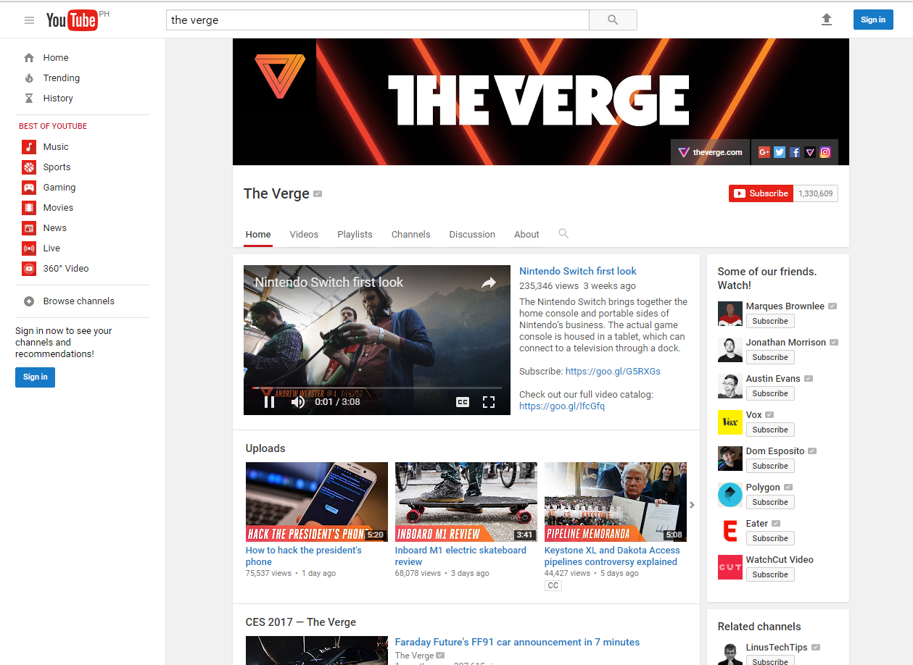 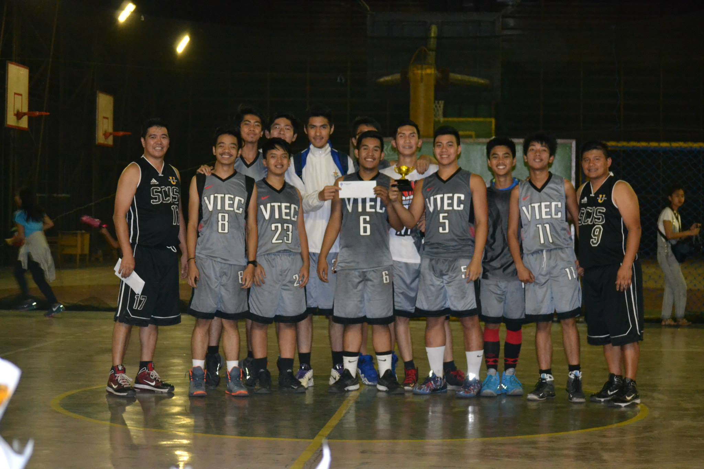Works
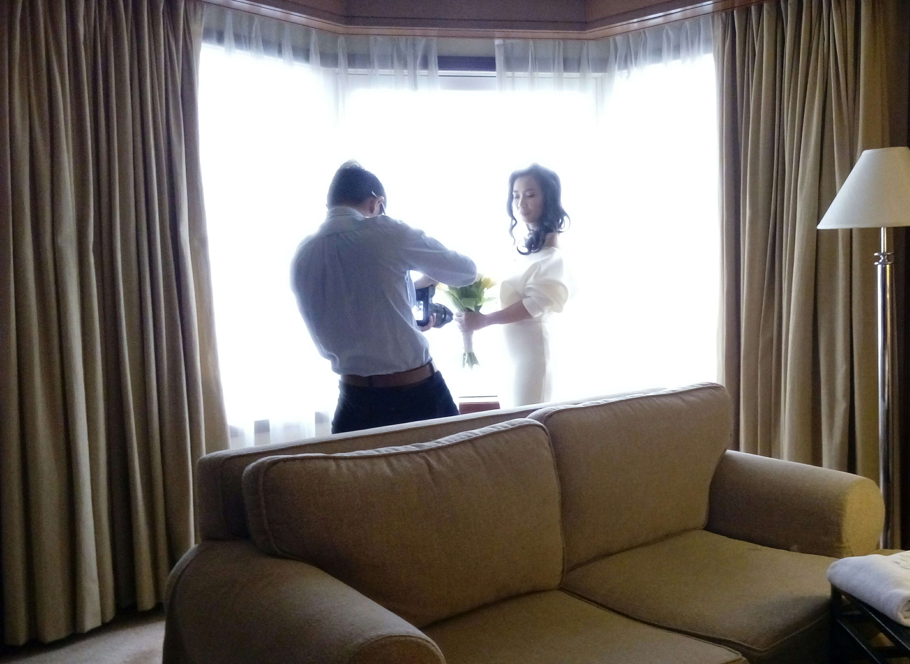
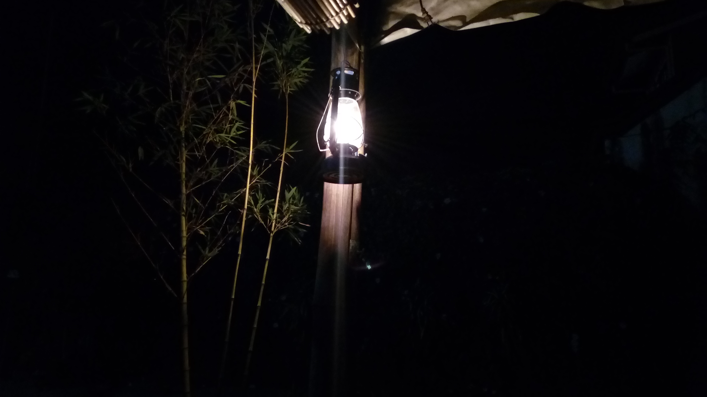
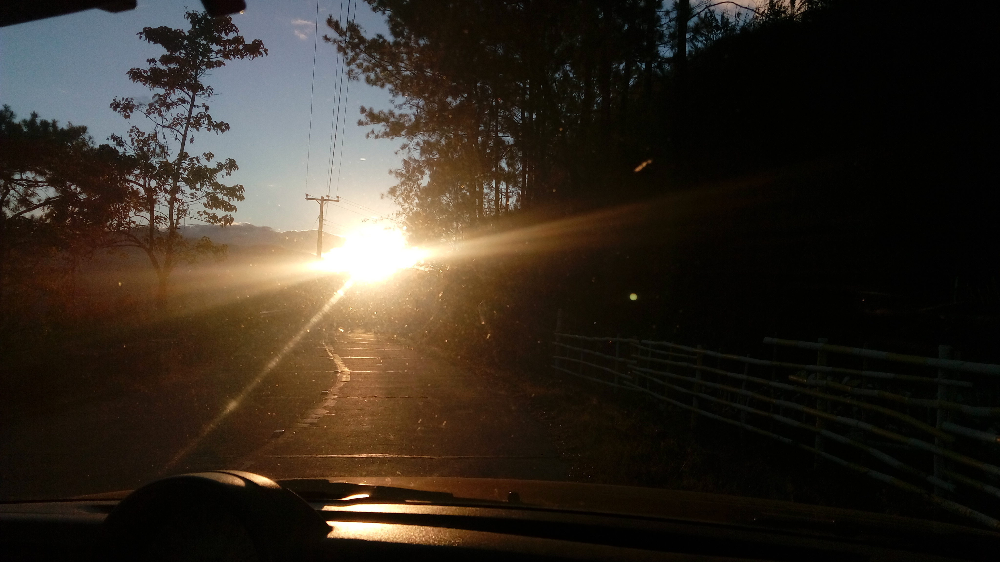
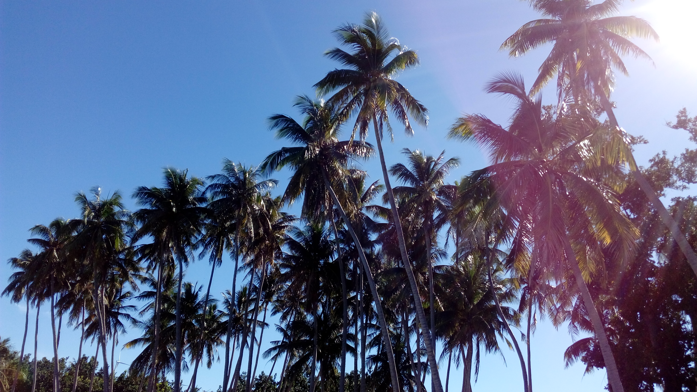
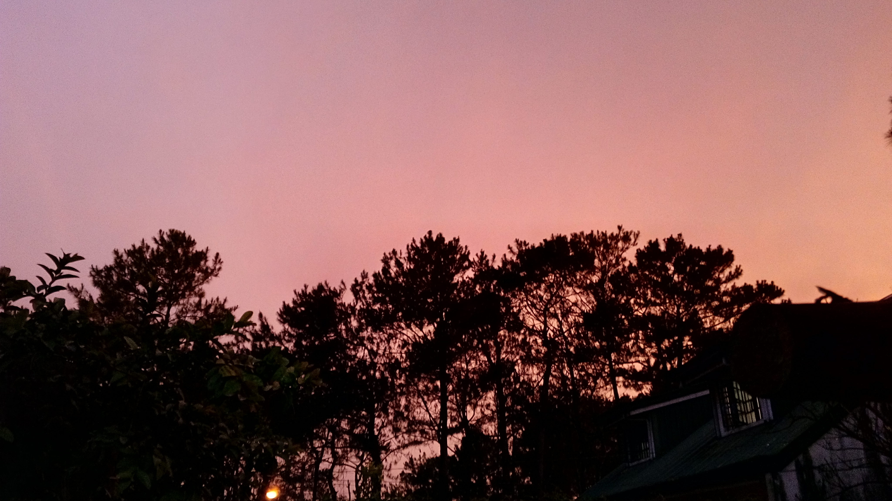
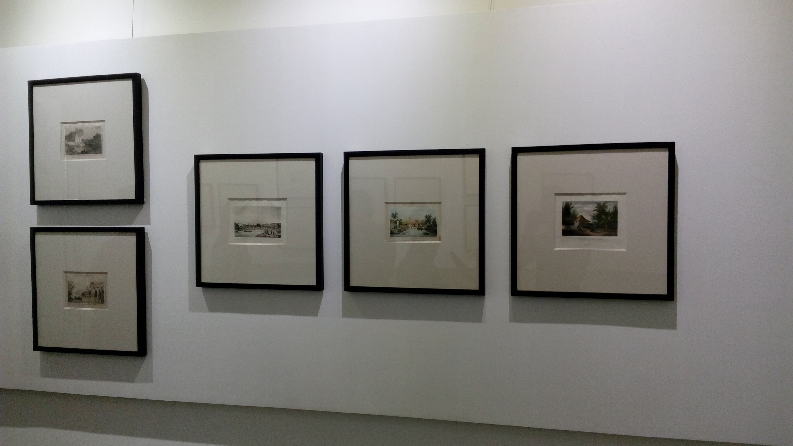
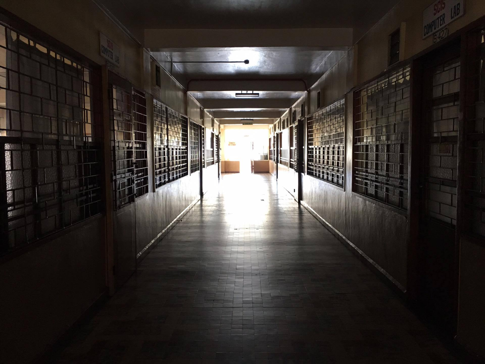
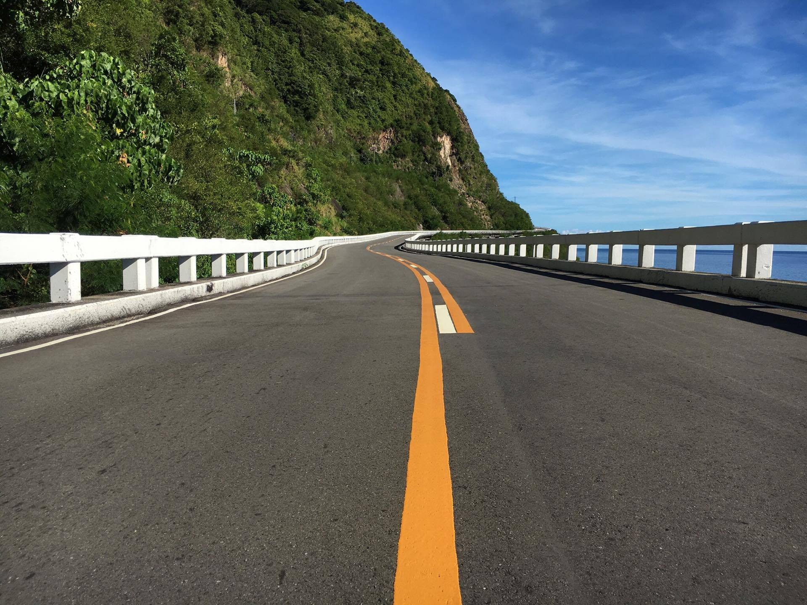
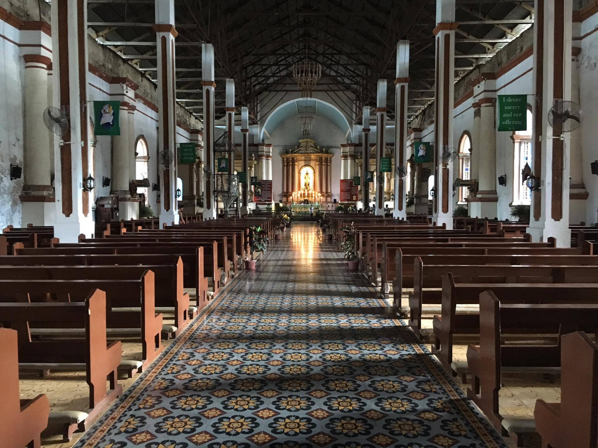
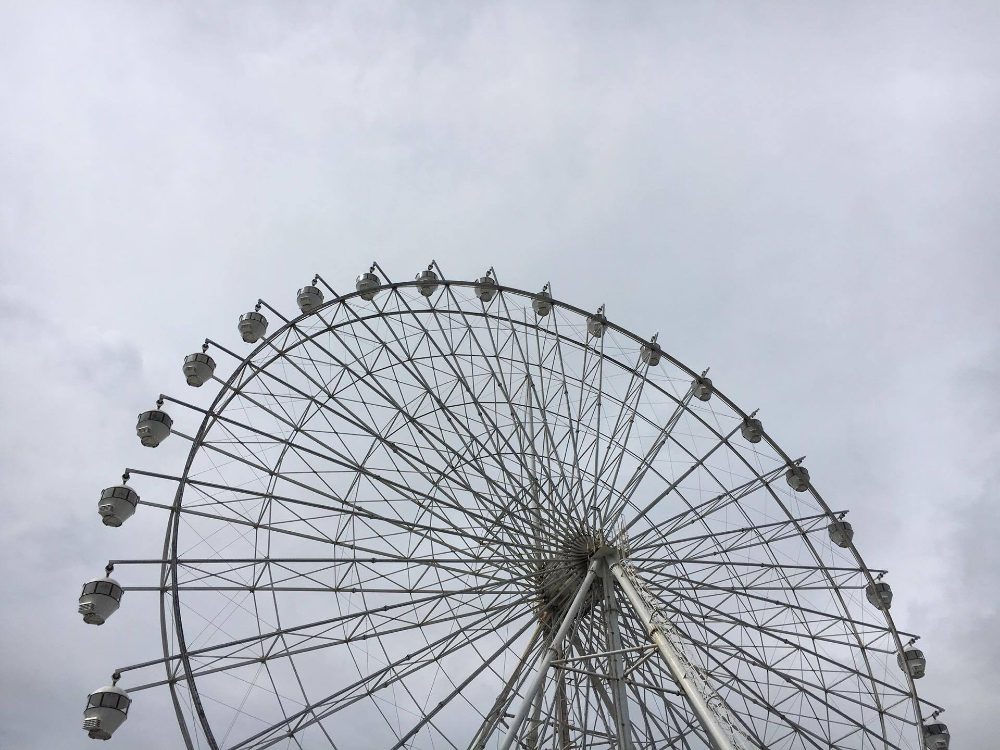